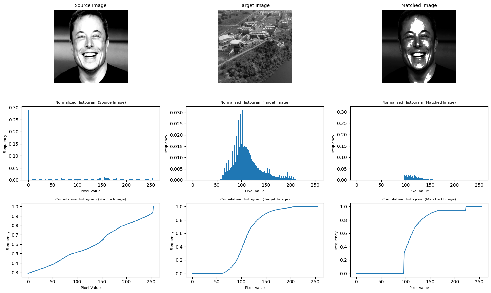

# Importing the libraries
import numpy as np
import os
import cv2 # used only for loading the image
import matplotlib.pyplot as plt # used only for displaying the imageHistogram Matching from Scratch
Image Processing
Custom Implementation of the Histogram Matching Algorithm from Scratch
Importing the necessary libraries
Defining the required functions
# this function is responsible for calculating the histogram of an image
def calculate_histogram(image, num_bins=256):
histogram = np.zeros(num_bins, dtype=np.int32) # initialize the histogram
for pixel_value in image.ravel(): # ravel() returns a contiguous flattened array
histogram[pixel_value] += 1 # increment the count of the pixel value
return histogram # return the histogram
# this function is responsible for calculating the normalized histogram of an image
def calculate_normalized_histogram(image, num_bins=256):
histogram = calculate_histogram(image, num_bins) # calculate the histogram
sum_of_histogram = np.sum(histogram) # sum of all the pixel values
histogram = histogram / sum_of_histogram # normalize the histogram
return histogram # return the normalized histogram
# this function is responsible for calculating the cumulative histogram of an image
def calculate_cumulative_histogram(histogram):
sum_of_histogram = np.sum(histogram) # sum of all the pixel values
histogram = histogram / sum_of_histogram # normalize the histogram
cumulative_histogram = np.zeros(histogram.shape, dtype=np.float32) # initialize the cumulative histogram
cumulative_histogram[0] = histogram[0]
for i in range(1, histogram.shape[0]): # calculate the cumulative histogram
cumulative_histogram[i] = cumulative_histogram[i - 1] + histogram[i]
return cumulative_histogram # return the cumulative histogram# opeining the images in grayscale and storing them in a list
image_folder_path = os.path.join(os.getcwd(), 'Dataset', 'histogram_matching')
image_set = []
for image_name in os.listdir(image_folder_path): # iterate over all the images in the folder
img = cv2.imread(os.path.join(image_folder_path, image_name), cv2.IMREAD_GRAYSCALE) # read the image in grayscale
image_set.append(img) # append the image to the list# this function is responsible for displaying the images and their histograms
def visualize_histograms(image_set, figsize=(15, 9), image_titles=None):
plt.figure(figsize=figsize) # set the figure size
for i, image in enumerate(image_set): # iterate over all the images
histogram = calculate_histogram(image) # calculate the histogram of the image
normalized_histogram = calculate_normalized_histogram(image) # calculate the normalized histogram of the image
cumulative_histogram = calculate_cumulative_histogram(histogram) # calculate the cumulative histogram of the image
plt.subplot(3, len(image_set), i + 1) # display the image
plt.imshow(image, cmap='gray')
plt.title(image_titles[i], fontsize=10)
plt.axis('off')
plt.subplot(3, len(image_set), i + 1 + len(image_set)) # display the histogram
plt.bar(range(256), normalized_histogram, width=1.0)
plt.title('Normalized Histogram ('+image_titles[i]+')', fontsize=8)
plt.xlabel('Pixel Value', fontsize=8)
plt.ylabel('Frequency', fontsize=8)
plt.subplot(3, len(image_set), i + 1 + 2 * len(image_set)) # display the cumulative histogram
plt.plot(cumulative_histogram)
plt.title('Cumulative Histogram ('+image_titles[i]+')', fontsize=8)
plt.xlabel('Pixel Value', fontsize=8)
plt.ylabel('Frequency', fontsize=8)
plt.tight_layout()
plt.show()
# displaying the images and their histograms
visualize_histograms(image_set, image_titles=['Image 0', 'Image 1', 'Image 2', 'Image 3'])
Implementing the algorithm
# this function is responsible for matching the histogram of an image to the histogram of a reference image
def match_histograms(image, reference_image):
mapping = get_mapping(image, reference_image) # get the mapping
matched_image = np.zeros(image.shape, dtype=np.uint8) # initialize the matched image
for i in range(image.shape[0]): # match the image
for j in range(image.shape[1]):
matched_image[i, j] = mapping[image[i, j]]
return matched_image # return the matched image
# this function is responsible for matching the histogram of an image to the histogram of a reference image
def get_mapping(image, reference_image, gray_levels=256):
histogram = calculate_histogram(image) # calculate the histogram of the image
cumulative_histogram = calculate_cumulative_histogram(histogram) # calculate the cumulative histogram of the image
reference_histogram = calculate_histogram(reference_image) # calculate the histogram of the reference image
reference_cumulative_histogram = calculate_cumulative_histogram(reference_histogram) # calculate the cumulative histogram of the reference image
mapping = np.zeros(gray_levels) # initialize the mapping
for pixel_value in range(gray_levels):
old_value = cumulative_histogram[pixel_value] # get the cumulative histogram of the image
temp = reference_cumulative_histogram - old_value # get the difference between the cumulative histogram of the reference image and the cumulative histogram of the image
new_value = np.argmin(np.abs(temp)) # get the index of the minimum value in the difference
mapping[pixel_value] = new_value # map the pixel value to the new value
return mapping # return the mapping# performing histogram matching and displaying the images and their histograms
def histogram_matching_and_visualization(image, reference_image, visualize=True):
matched_image = match_histograms(image, reference_image) # match the histogram of the image to the histogram of the reference image
image_set = [image, reference_image, matched_image]
image_titles = ['Source Image', 'Target Image', 'Matched Image']
if visualize:
visualize_histograms(image_set, image_titles=image_titles) # display the images and their histograms
return matched_image # return the matched image matching = histogram_matching_and_visualization(image_set[0], image_set[1]) 
matching = histogram_matching_and_visualization(image_set[3], image_set[2])
matching = histogram_matching_and_visualization(image_set[1], image_set[3]) 
matching = histogram_matching_and_visualization(image_set[2], image_set[0])
Analysis of the obtained resutls
import numpy as np
from scipy.stats import entropy
from skimage.metrics import structural_similarity as ssim
from skimage.metrics import peak_signal_noise_ratio as psnr
def calculate_image_statistics(original_image, target_image, matched_image):
# Calculate Mean and Standard Deviation
mean_original = np.mean(original_image)
std_original = np.std(original_image)
mean_target = np.mean(target_image)
std_target = np.std(target_image)
mean_matched = np.mean(matched_image)
std_matched = np.std(matched_image)
# Calculate SSIM
ssim_score = ssim(original_image, matched_image)
# Create a dictionary to store the statistics
statistics = {
"Original Mean": mean_original,
"Original Standard Deviation": std_original,
"Target Mean": mean_target,
"Target Standard Deviation": std_target,
"Matched Mean": mean_matched,
"Matched Standard Deviation": std_matched,
"SSIM Score (Source vs Matched)": ssim_score,
}
return statisticsmatching = histogram_matching_and_visualization(image_set[0], image_set[1], visualize=True)
statistics = calculate_image_statistics(image_set[0], image_set[1], matching)
for key, value in statistics.items():
print(f"{key}: {value}")
Original Mean: 80.04150772094727
Original Standard Deviation: 68.48801554947227
Target Mean: 126.48823547363281
Target Standard Deviation: 69.12917387622817
Matched Mean: 130.7914924621582
Matched Standard Deviation: 62.277325624710976
SSIM Score (Source vs Matched): 0.6362629163593398Mean and Standard Deviation
The original image has a mean of approximately 80.04 and a standard deviation of approximately 68.49. The target image has a mean of approximately 126.49 and a standard deviation of approximately 69.13. After the histogram matching process, the matched image has a mean of approximately 130.79 and a standard deviation of approximately 62.27. Interpretation: The means have shifted towards each other after histogram matching, but the standard deviations have not changed significantly.
SSIM Score
The Structural Similarity Index (SSIM) score between the original and matched images is approximately 0.636. Interpretation: An SSIM score of 1 indicates a perfect match. A score of 0.636 suggests that the matched image is reasonably similar to the original but not a perfect match.
matching = histogram_matching_and_visualization(image_set[1], image_set[3], visualize=True)
statistics = calculate_image_statistics(image_set[1], image_set[3], matching)
for key, value in statistics.items():
print(f"{key}: {value}")
Original Mean: 126.48823547363281
Original Standard Deviation: 69.12917387622817
Target Mean: 102.53508758544922
Target Standard Deviation: 90.99119020648051
Matched Mean: 102.81129837036133
Matched Standard Deviation: 90.91224212665476
SSIM Score (Source vs Matched): 0.6144812508253021Mean and Standard Deviation
The original image has a mean of approximately 126.49 and a standard deviation of approximately 69.13. The target image has a mean of approximately 102.54 and a standard deviation of approximately 90.99. After the histogram matching process, the matched image has a mean of approximately 102.81 and a standard deviation of approximately 90.91. Interpretation: Both the means and standard deviations have shifted towards the target image each other after histogram matching.
SSIM Score
The Structural Similarity Index (SSIM) score between the original and matched images is approximately 0.615. Interpretation: The matched image is reasonably similar to the original, but it may not be a perfect match.